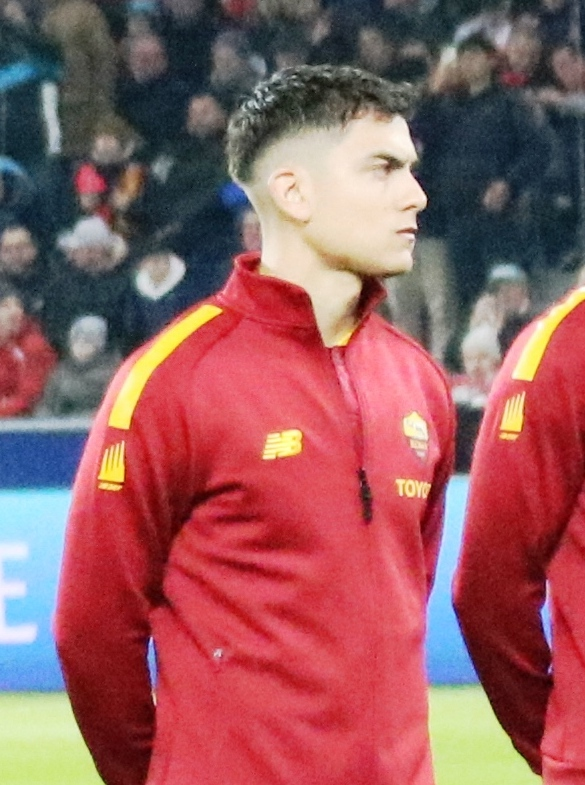
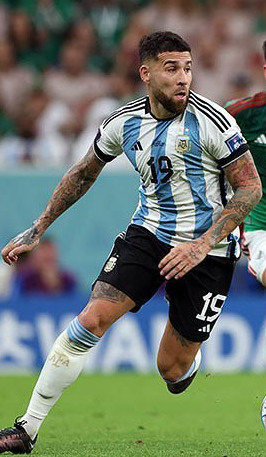

| Nombre | Posición | Edad | Bibliografía | Portada |
|---|---|---|---|---|
| Cristian Romero | Defensa central | 27 |
Cristian “Cuti” Romero es un defensor central argentino nacido el 27 de abril de 1998 en Córdoba, Argentina. Se destaca por su fortaleza física, buen posicionamiento y capacidad para anticipar al rival.
|
 |
| Paulo Dybala | Extremo derecho o mediapunta | 31 |
Paulo Dybala es un delantero argentino nacido el 15 de noviembre de 1993 en Laguna Larga, Córdoba, Argentina. Es conocido por su técnica depurada, visión de juego, regate y capacidad para anotar goles. Actualmente juega en la Serie A con la Roma.
|
 |
| Emiliano Martínez | Arquero | 33 |
Emiliano Martínez es un arquero argentino nacido el 2 de septiembre de 1992 en Mar del Plata, Argentina. Se destaca por sus reflejos, seguridad bajo los tres palos y gran capacidad para atajar penales. Actualmente juega en Aston Villa de la Premier League.
|
 |
| Alejandro Garnacho | Extremo izquierdo | 21 |
Alejandro Garnacho es un delantero joven nacido el 1 de julio de 2004 en Madrid, España. Tiene ascendencia argentina por parte de madre y ha decidido representar a la selección argentina a nivel internacional.
|
|
| Gonzalo Montiel | Lateral derecho | 28 |
Gonzalo Montiel nació el 1 de enero de 1997 en Buenos Aires, Argentina. Es un defensor que juega principalmente como lateral derecho. Montiel es conocido por su velocidad, buen manejo del balón y capacidad tanto para defender como para sumarse al ataque. Actualmente juega en Sevilla FC de La Liga española.
|
 |
| Julián Álvarez | Delantero centro | 25 |
Julián Álvarez nació el 31 de enero de 2000 en Calchín, Argentina. Es un delantero versátil, capaz de jugar tanto como centrodelantero como en posiciones más retrasadas. Destaca por su velocidad, movilidad y capacidad para definir jugadas.
|
 |
| Lautaro Martínez | Delantero centro | 28 |
Lautaro Javier Martínez nació el 22 de agosto de 1997 en Bahía Blanca, Argentina. Es un delantero centro reconocido por su potencia, técnica y capacidad goleadora.
|
 |
| Lisandro Martínez | Defensa central | 27 |
Lisandro Martínez es un defensor versátil conocido por su agresividad, capacidad técnica y buena salida con el balón. Comenzó su carrera en Newell's Old Boys de Argentina y luego se trasladó a Defensa y Justicia.
|
 |
| Mastantuono | Media punta y extremo derecho | 18 |
Es un delantero formado en las inferiores de River Plate, donde se destacó por su habilidad técnica y capacidad goleadora.
|
|
| Lionel Messi | Delantero centro, mediapunta o extremo derecho | 38 |
Lionel Andrés Messi nació el 24 de junio de 1987 en Rosario, Argentina. Es considerado uno de los mejores futbolistas de todos los tiempos. Comenzó su carrera en Newell’s Old Boys antes de unirse a la academia juvenil del Barcelona.
|
 |
| Nicolás Otamendi | Defensa central | 37 |
Nicolás Otamendi nació el 12 de febrero de 1988 en Buenos Aires, Argentina. Es un defensor central conocido por su solidez defensiva, liderazgo y experiencia internacional.
|
 |
| Nicolás Tagliafico | Lateral izquierdo | 33 |
Nicolás Tagliafico nació el 31 de agosto de 1992 en Buenos Aires, Argentina. Es un lateral izquierdo reconocido por su agresividad defensiva, buen manejo del balón y capacidad para sumarse al ataque.
|